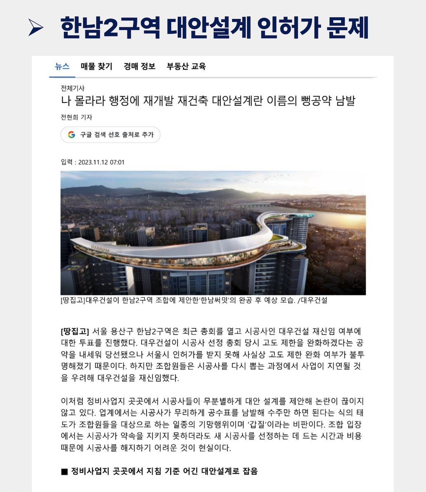
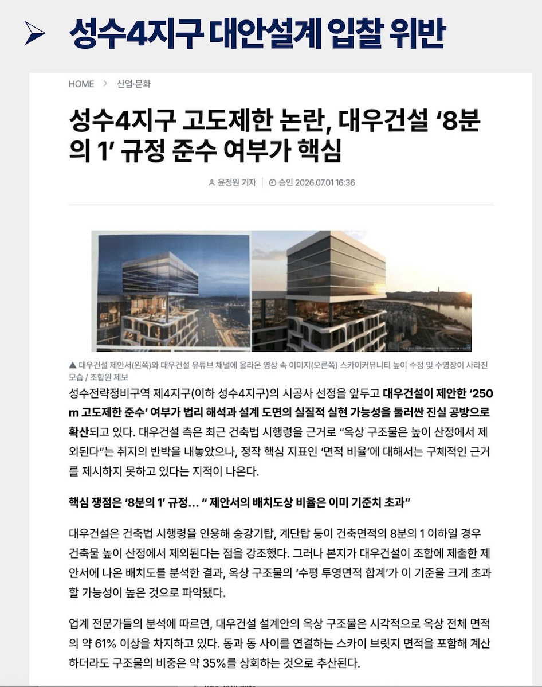

1대우건설 대안설계의 인허가 및 심의 리스크
- SKM과 리얼플랜컨설팅의 의견에 따르면 대우건설 대안설계에는 심의과정에서 쟁점이 될 수 있는 여러 사항이 있으나, 특히 인허가에 가장 큰 영향을 미칠 수 있는 핵심 사항은 다음 두 가지입니다.
- 단지 레벨 계획 : 북측 기준 기단부 높이를 약 39m로 계획하여 기존지형 및 주변 도시 환경과의 조화에 대한 우려가 있음. 향후 인근 단지의 민원발생 가능성 높음. 이에 따라 정비계획 변경 및 건축심의, 사업일정에 영향을 미칠 가능성이 있는 것으로 검토되었음.
- 단지 기단부 계획 : 건축법상 공동주택의 지하층에는 원칙적으로 거실 설치가 제한됨. 따라서 인허가 과정에서 리스크가 존재하며, 현 단계에서 인허가 가능성을 확정하거나 보장하기 어려움.
- 조합은 지난 5월 5층 완화에 따른 정비계획 변경(안) 과정에서 서울시 관계부서로부터 '지형순응형 계획 및 지형조정이 필요하다'는 보완의견을 지속적으로 받았고, 이에 조합은 해당 의견을 적극 반영하여 지형계획을 보완한 후 정비계획변경(안)을 제출하여 최종적으로 심의를 통과하였습니다.
참고 언론보도
한남2구역 대안설계 인허가 문제대우건설이 시공사 선정 당시 고도제한 완화를 공약했으나 서울시 인허가를 받지 못해 완화 여부가 불투명해지며, 시공사 재신임 여부를 총회에 부치는 논란이 발생한 사례 (2023. 11. 보도)

참고 언론보도
성수4지구 대안설계 입찰 위반 논란대우건설 제안 설계의 '250m 고도제한 준수' 여부(옥상 구조물의 '8분의 1' 면적 비율 규정)를 둘러싸고 실현 가능성 공방이 확산된 사례 (2026. 7. 보도)
